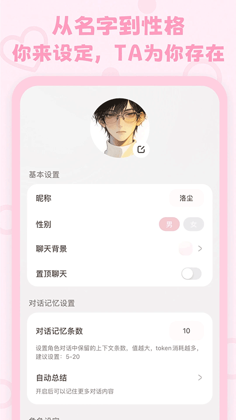
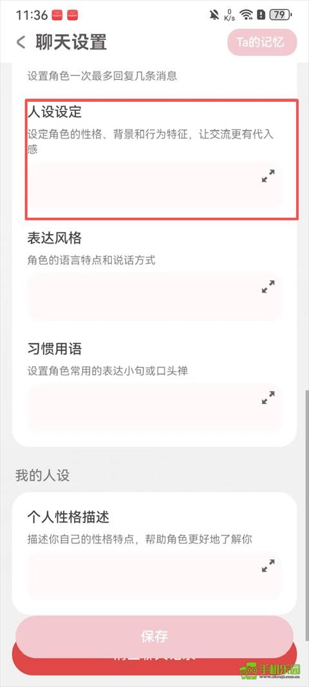

lovemo 为什么敢把 AI 的"脑子"摊开给你看
从记忆透明化、人设三层分工到模型可插拔，拆解 lovemo 在角色养成赛道上反常识的三个技术设计，以及它们各自的代价。
我玩过不少 AI 聊天应用。大多数产品对"AI 到底记住了什么"这件事，态度是暧昧的——要么完全黑盒，要么只给一个模糊的"记忆条数"滑杆。lovemo 不一样，它在聊天设置的右上角放了一个粉色标签，叫"Ta 的记忆"。点开，角色当前记住的全部内容一条条摊在你眼前。
这不是一个功能，这是一种产品哲学的宣言。
问题：角色养成为什么需要"透明化"
先想一个根本问题：AI 角色扮演的核心矛盾是什么？ 不是模型不够聪明，而是用户无法建立"这个角色真的认识我"的信任感。
传统产品的解法是堆模型能力——更大的上下文窗口、更强的长期记忆、更自然的对话流畅度。lovemo官网反着来：它不试图让模型无限变强，而是让用户能够感知和干预模型的记忆过程。"Ta 的记忆"入口就是这个思路最直接的体现。
这背后是两种产品路线的分岔：一种认为"AI 足够好时用户不需要理解它"，另一种认为"透明本身就是信任的来源"。我倾向后者。当你能翻到 AI 记住了你上周随口提过的那家咖啡店，那种"被记住"的情感冲击力，比任何流畅的对话都强。
拆解一：记忆系统的"可审计"架构
lovemo 的记忆链条分三层：对话记忆条数决定原始上下文窗口有多长（类似模型的短期工作区），自动总结把旧对话压缩成结构化摘要存入长期记忆，Ta 的记忆则是这个摘要库的可视化入口。

这个设计的妙处在于它不做"一刀切"。记忆条数不是越多越好——窗口拉到 200 条，模型在生成回复时需要同时消化更多上下文，速度会明显下降，甚至出现信息稀释。lovemo 把这个权衡直接交给用户：你更看重响应速度还是对话连贯性？自己选。自动总结也是同理，开启后 AI 会在后台定期把早期对话提炼成要点，但提炼本身需要消耗一次额外的模型调用，意味着你的免费额度或 API 费用会涨。
更有意思的是"Ta 的记忆"不是只读的。发现 AI 总结出了错误印象？你可以在后续对话里自然纠正，下一轮总结就会覆盖旧的偏差。这实际上把传统的"模型微调"门槛降到了日常对话级别——用户不需要写 prompt engineering 教程，只需要像和真人相处一样"说清楚"就行。
拆解二：人设的三层分工
lovemo 在角色创建上也玩了同样的"反黑盒"。别的产品通常只给一个大文本框让你写人设，lovemo 把它拆成了三个字段：人设设定管性格背景和行为逻辑，表达风格管语言质感（正式还是俏皮、长句还是短句），习惯用语管口头禅和标志性小词。

为什么要拆？因为 LLM 处理指令时存在一个"注意力稀释"问题：当你把性格、语气、口癖全塞进一个长段落里，模型对末尾细节的遵从度会显著下降。拆成三个独立字段相当于给模型的注意力做了分区——每个区域只负责一类约束，响应时的遵从度自然更高。
人设设定里建议用第三人称写"TA 与你的关系"而不是写履历，建议把"TA 会怎么做"写具体（比如"被怼了会先愣一下再回嘴"）而不是堆形容词——这些写作指导不是用户体验的小技巧，是直接冲着模型的指令遵循特性来的。想深挖进阶调参和人设打磨的完整技巧，lovemo文档里有更系统的讲法。
拆解三：模型可插拔的野心与局限
先从lovemo下载拿到应用，进 API 设置页就能看到——lovemo 最激进的设计是把"大脑选择"也开放给了用户。你可以选内置的硅基流动直连，也可以填任意 OpenAI 兼容接口的 URL 和 Key。这意味着理论上你可以用 lovemo 的全套角色养成界面，搭配任何一家模型服务商的推理能力。
这个设计的底层逻辑是界面层和推理层的解耦。角色养成是产品的核心竞争力，模型只是基础设施。当模型价格、速度、质量持续波动时，把选择权交给用户等于给自己买了一份对冲——今天硅基流动便宜好用就用硅基流动，明天出了更好的模型换过去就是，产品本身不需要跟着迁移。
但代价也是实实在在的。切换模型"像换了个灵魂"，同一份人设放到不同模型上表现可能天差地别。多模型切换曾出现过响应延迟和调用中断的问题，说明不同服务商的 API 行为差异比预期大。这类兼容性问题短期很难根治，属于"开放架构"天然要付的维护成本。
取舍：这套设计不适合谁
聊完原理也该泼点冷水。lovemo 的思路不是银弹，它天然有适用边界。
第一，重度懒癌用户可能不喜欢。从选模型、写人设三层、调记忆条数，到定期翻 Ta 的记忆纠正偏差，lovemo 把大量决策交给了用户。这给了自由度，但也给了负担。星野那种"装好就能聊"的体验对很多人来说反而是优势。
第二，极致情感沉浸党可能觉得不够"真"。知道 AI 的记忆是怎么运作的、能手动干预它的印象，这种"上帝视角"会打破一部分人追求的"它真的在成长"的幻觉。lovemo 走的是"我知道你是 AI 但我接受并享受这个设定"的路线，不适合追求完全虚拟代入的用户。
第三，成本敏感者要算细账。每日 60 条免费额度聊完就得考虑 Moly 订阅或自备 API。自动总结、多轮长对话、图像消息——每一项都会悄悄抬高 token 消耗。把模型选择权交给你，本质上也把成本控制权一并移交了。
判断：这是一条更"工程师友好"的路线
我自己的使用感受是，lovemo 在同类产品里更像一个"极客玩具"而不是"情感陪伴 App"。它的设计思路是：用户不是需要被哄着的消费者，而是愿意折腾、理解原理、亲自调参的共建者。
这条路线在当下的 AI 角色扮演赛道里是稀缺的。大多数产品要么在比谁的模型接入得更多，要么在比谁的社区 UGC 更活跃。lovemo 在做的事情更底层：它在重构"用户和 AI 角色之间的权力关系"——从单向接受，变成双向共建。
至于这条路线能走多远，还得看长期。但有一点是确定的：当一个产品敢把 AI 的记忆摊开给你看，敢把大脑选择权交给你，它就已经和那些"假装自己很聪明"的同类不在同一个象限里了。模型会迭代，界面会升级，但"用户对 AI 的控制权"这件事，是 lovemo 在产品基因里种下的种子。
如果你想上手试试，不想折腾 API 的话，它内置的模型路线配每日免费额度也够日常聊一阵。
最后补一句：lovemo 的人设写作指南、记忆系统设计和模型接入文档，我在GitHub同步了完整版本，国内访问不便的朋友可以看Gitee或GitCode的镜像。